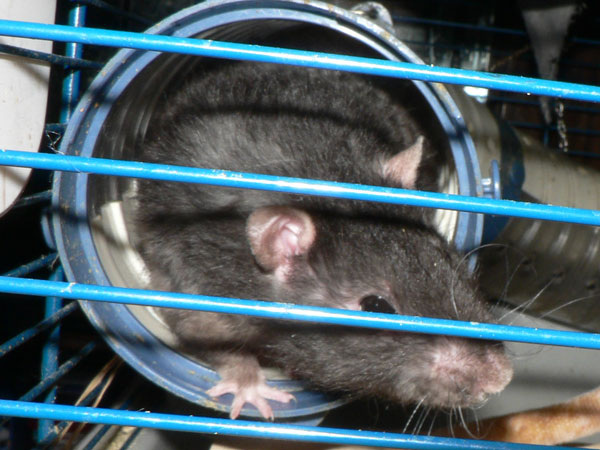

Апрель 2010

Вот так приходится мыть клетку.
Дон Румата на фоне ваты.

Вата и в нижнем поддоне… А это что за тяпочка?
Вот такая странная. А ведь был диван, просто крысы его реконструировали. Вот такой был:

Дон Румата почивает в гамаке рядом со столовой. Он его облюбовал и там обитал, пока не перестроили клетку.

Сосискин, вид сзади, и Сентябрь.
Румата сдает позиции — уже стар. Жорик выпедривается больше, а вот Иннокентий серьезен.

Кеша теперь типа главный.

Сеня в трубе.

Иннокентий, кстати, вымахал ого-го. Вот только взвесить не дается…
Жорик: — А что, вы тут помирились уже?

Сосискин в гамаке.
А это — Уэлси из Крыскиного Теремка, приезжала в гости.

Вот такие длинные 352 грамма.
На кухне была поставлена отдельная клетка…

…и заселена доном Руматой и Уэлси.
Уэлси: — Как бы так спрятаться. чтобы нашел?

Злые люди бедным крыскам не дают поесть сосиски.
…а потом, 8 мая, родились крысята: Тотошка, Терабайт, Тефтель, Томми, Тютелька, Традиция, Тиффани, Тормашка, Тайра и Танюша.